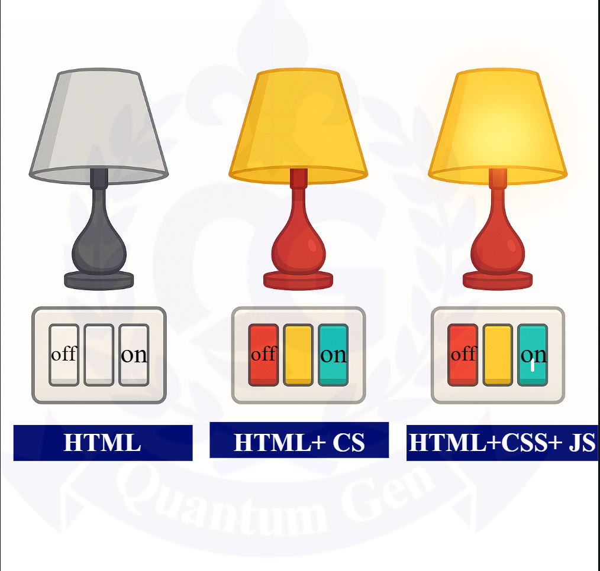

JavaScript
About JavaScript : |
JS (javaScript) is a programming language that makes websites lively, interactive, and dynamic. Html creates the structure of the website. Css designs it, while JS writes the logic. For example, there is a simple lamp. It is made from html. Now that lamp is designed and made beautiful with css. Now the logic of turning on the lamp when the beautiful lamp is switched on is written in js. Example:

Why is Js need?
Only HTML and CSS make a website static, but with the help of JS,
a website becomes dynamic. For example: a menu opens when clicked,
a button changes color when pressed, a popup opens, etc.
For example: a menu opens when clicked, a button changes color when pressed, a popup opens etc.